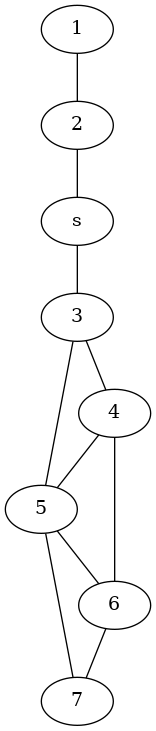
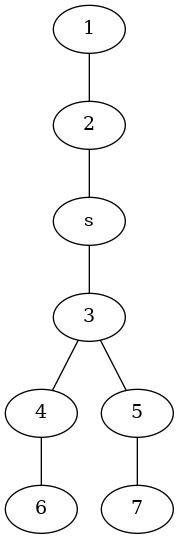

Graphs: Breadth-First-Search
Table of Contents
Breadth First Search
Imports
# python
from __future__ import annotations
from queue import Queue
# pypi
from attrs import define
# this project
from bowling.data_structures.graphs.graph import Graph, Vertex
from bowling.data_structures.graphs import graph
Constants
INFINITY = float("inf")
The Class
@define
class BreadthFirstSearch:
"""Creates a shortest-path tree from a source node to all reachable nodes
Note:
The vertices should be BFSVertex instances
Args:
graph: the graph with the adjacency dict for all the vertices
"""
graph: Graph
The Call
def __call__(self, source: BFSVertex) -> None:
"""Does the breadth first search to create the shortest paths tree"""
# reset all the search attributes
for vertex in set(self.graph.adjacent) - {source}:
vertex.color, vertex.distance, vertex.predecessor = (
graph.Color.WHITE, INFINITY, None)
source.color, source.distance, source.predecessor = (
graph.Color.GRAY, 0, None)
queue = Queue()
queue.put(source)
while not queue.empty():
predecessor = queue.get()
for vertex in self.graph.adjacent[predecessor]:
if vertex.color is graph.Color.WHITE:
vertex.color, vertex.distance, vertex.predecessor = (
graph.Color.GRAY, predecessor.distance + 1, predecessor)
queue.put(vertex)
predecessor.color = graph.Color.BLACK
return
Testing
# pypi
from collections import defaultdict
from expects import be, be_none, equal, expect
from pathlib import Path
import networkx
# software under test
from bowling.data_structures.graphs import graph
from bowling.data_structures.graphs.breadth_first_search import (
BreadthFirstSearch)
import bowling.data_structures.graphs.breadth_first_search as bfs
test = graph.Graph()
source = BFSVertex(identifier="s")
v1 = BFSVertex(identifier=1)
v2 = BFSVertex(identifier=2)
v3 = BFSVertex(identifier=3)
test.add(v1, v2)
test.add(v2, source)
test.add(v3, source)
search = BreadthFirstSearch(test)
search(source)
for node in (source, v1, v2, v3):
expect(node.color).to(be(graph.Color.BLACK))
expect(source.predecessor).to(be_none)
expect(source.distance).to(equal(0))
expect(v3.predecessor).to(be(source))
expect(v3.distance).to(be(1))
expect(v2.predecessor).to(be(source))
expect(v2.distance).to(be(1))
expect(v1.predecessor).to(be(v2))
expect(v1.distance).to(be(2))
CLRS Example
We'll start with the same Graph from the previous example and add more nodes.
v4 = BFSVertex(identifier=4)
v5 = BFSVertex(identifier=5)
v6 = BFSVertex(identifier=6)
v7 = BFSVertex(identifier=7)
test.add(v3, v4)
test.add(v3, v5)
test.add(v4, v5)
test.add(v4, v6)
test.add(v5, v6)
test.add(v5, v7)
test.add(v6, v7)
plot_adjacent = {key.identifier: item for key, item in test.adjacent.items()}
for key, adjacents in plot_adjacent.items():
plot_adjacent[key] = [adjacent.identifier for adjacent in adjacents]
plot_graph = networkx.Graph(plot_adjacent)
pydot_graph = networkx.nx_pydot.to_pydot(plot_graph)
SLUG = "graphs-breadth-first-search"
PATH = Path(f"files/posts/{SLUG}/")
if not PATH.is_dir():
PATH.mkdir()
pydot_graph.write_png(PATH/"clrs_example.png")

search(source)
nodes = networkx.Graph()
for node in test.adjacent.keys():
if node.predecessor is not None:
nodes.add_edge(node.identifier, node.predecessor.identifier)
pydot_graph = networkx.nx_pydot.to_pydot(nodes)
pydot_graph.write_png(PATH/"clrs_example_searched.png")
